本ページで使用する略語一覧
| 略語 | 正式名称 — 日本語訳 |
| PM | Pacemaker — ペースメーカー |
| CIED | Cardiac Implantable Electronic Device — 心臓植込み型電気デバイス |
| SND | Sinus Node Dysfunction — 洞不全症候群 |
| AV | Atrioventricular — 房室 |
| RV / LV | Right / Left Ventricle — 右室 / 左室 |
| EMI | Electromagnetic Interference — 電磁干渉 |
| PMT | Pacemaker-Mediated Tachycardia — ペースメーカー誘発性頻拍 |
| PVARP | Post-Ventricular Atrial Refractory Period — 心室後心房不応期 |
| TARP | Total Atrial Refractory Period — 総心房不応期（AV delay + PVARP） |
| CMR | Cardiac Magnetic Resonance — 心臓MRI |
| SAR | Specific Absorption Rate — 比吸収率 |
| CRT | Cardiac Resynchronization Therapy — 心臓再同期療法 |
| TV / CS | Tricuspid Valve / Coronary Sinus — 三尖弁 / 冠静脈洞 |
| TEE | Transesophageal Echocardiography — 経食道心エコー |
| ERI / EOL | Elective Replacement Indicator / End of Life — 待機的交換指標（残90日）/ 電池終末期 |
| AF | Atrial Fibrillation — 心房細動 |
| PVC | Premature Ventricular Contraction — 心室期外収縮 |
| VA | Ventriculoatrial — 心室→心房（逆行性伝導） |
| LR / URL | Lower Rate / Upper (Tracking) Rate Limit — 下限レート / 上限トラッキングレート |
| EGM | Electrogram — 心内電位記録（デバイス記録のECG） |
| BiV | Biventricular Pacing — 両室ペーシング（CRTで使用） |
| ICD | Implantable Cardioverter-Defibrillator — 植込み型除細動器 |
| IE | Infective Endocarditis — 感染性心内膜炎 |
| TLE | Transvenous Lead Extraction — 経静脈リード抜去（専門施設で実施） |
| SA / S. aureus | Staphylococcus aureus — 黄色ブドウ球菌 |
| PFO | Patent Foramen Ovale — 卵円孔開存 |
| HFrEF | Heart Failure with Reduced Ejection Fraction — 駆出率低下心不全 |
| LBBB / RBBB | Left / Right Bundle Branch Block — 左 / 右脚ブロック |
SECTION 1 ペースメーカーの歴史的変遷
Central Illustration：ペースメーカーの歴史的パラダイムシフト
ペーシングの歴史は1930年代、Hymanの「人工ペースメーカー」（彼自身が命名）に始まる。手回しクランクでDC発電機を駆動し、肋間から右心房に電気刺激を送った。当時Hymanは医療界の懐疑・訴訟・「神の意志への干渉」という非難に直面し、製造企業も見つからなかった。第2次世界大戦後、公衆の認識が変わり、偉大な革新者たちが飛躍的進歩をもたらした。
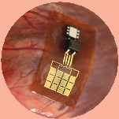
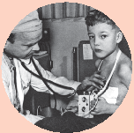
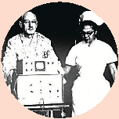
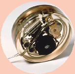
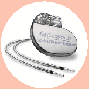
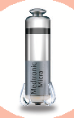
Central Illustration：ペースメーカーのパラダイムシフト。外部AC電源式 → 電池駆動「ウェアラブル」型 → 完全植込み型（1958年）→ 現在のリードレス型（2016年）→ 将来のバッテリーレス型（心臓運動からエネルギー収穫）。Mulpuru SK et al. J Am Coll Cardiol. 2017;69(2):189–210より引用。
| 年 | 出来事 | 人物 |
|---|---|---|
| 1930年代 | 最初の「人工ペースメーカー」（手回し式DC発電機） | Hyman |
| 1957年10月31日 | ミネアポリス停電（3時間）→ 乳児死亡 → 翌日、電池式携帯型ペースメーカー開発依頼。Earl Bakken（Medtronic創設者）が2トランジスタ式回路を改造。Medtronic設立 | Lillehei / Bakken |
| 1960年 | ストックホルムにて初の完全植込み型ペースメーカー移植。初代は8時間で停止。患者Arne Larsson（完全房室ブロック・Adams-Stokes発作）は最終的に20回以上の交換を経て2002年に86歳で死去。術者・設計技師より長生き | Elmqvist / Senning |
| 〜2015年 | 多チャンバーペーシング・レート適応・サイズ縮小・インターネット遠隔監視・電池寿命延長。ただし「経静脈リード＋体外ジェネレーター」という基本構造は変わらず | 各メーカー |
| 2016年 | リードレスペースメーカー（デバイス全体を心腔内に配置）が臨床導入 | — |
| 将来 | バッテリーレス型（心臓運動からエネルギー収穫）、生物学的ペーシング（細胞修飾）が研究中 | — |
SECTION 2 基礎生理：刺激閾値・センシング・インピーダンス
Figure 1：心臓刺激伝導系の解剖
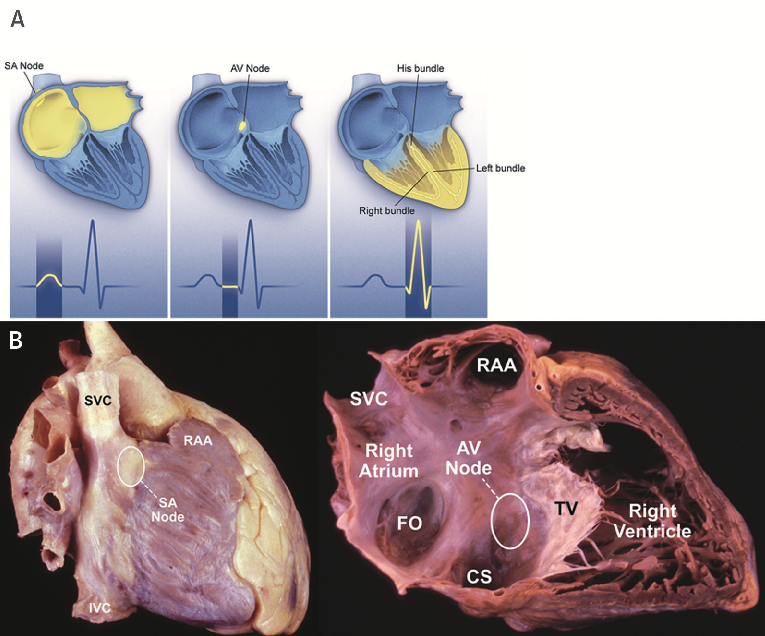
正常の心臓活動は洞結節の自動能から始まり、電気的波面が心房を伝播してAV結節を通過し、His-Purkinje系を経て心室へ急速に広がる。洞結節の自動能または伝導の完全性が障害されると、外部からの小さな電気刺激が心筋細胞を閾値まで脱分極させ、隣接細胞へと波面を伝播させる。これがペースメーカーの原理である。
Figure 2：経静脈ペースメーカーシステムの構成
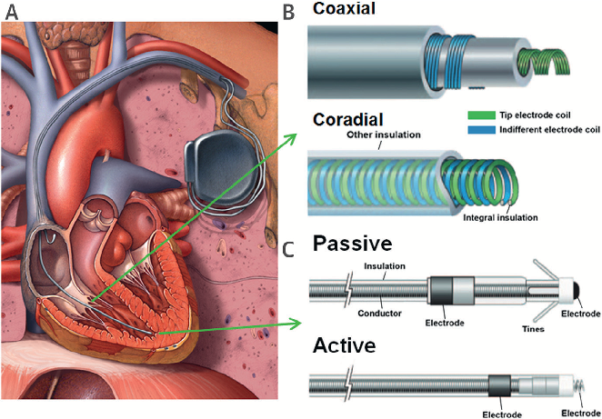
ペースメーカーはパルスジェネレーター（缶）とリードから成る。缶には電池と電子回路が密封収納され、リードが心筋に接触してペーシングパルスを届け、固有心活動をセンシングする。絶縁材がコンダクターとリード先端電極を分離する。
ペーシングの物理的基礎
単極ペーシング：リード先端とパルスジェネレーター缶の間。双極は胸筋刺激が少なく好まれる。単極は胸壁筋電位のオーバーセンシングが起きやすい。
SUMMARY第1章のキーメッセージ
SECTION 1 ペーシングモードコード（4〜5文字）
ペーシングモードの読み方
ペーシングモードは4〜5文字のコードで表現される（例：DDDR）。
| 位置 | 意味 | コード |
|---|---|---|
| 第1文字 | ペーシングチャンバー | A（心房）/ V（心室）/ D（両方） |
| 第2文字 | センシングチャンバー | A / V / D |
| 第3文字 | センシングへの応答 | I（抑制）/ T（トリガー）/ D（両方） |
| 第4文字 | レート応答 | R（あり）/ なし |
| 第5文字 | 多部位ペーシング | A / V / D（使用時のみ） |
主要ペーシングモードと適応
| モード | 適応 | 特記事項 |
|---|---|---|
| DDD | 洞機能は正常だがAV伝導障害あり | 洞活動を感知→プログラムされたAV間隔後に心室ペーシング（P同期ペーシング） |
| DDDR | 洞機能とAV結節機能の両方が異常 | レート応答機能が変時不全を補う |
| VVI / VVIR | 慢性AF、まれな洞停止・徐脈 | 心房性不整脈のトラッキングリスクなし。レート応答（VVIR）で変時不全補完 |
| AAIR | 洞不全症候群のみ（AV伝導は正常） | 心室ペーシング不要。三尖弁を跨ぐリードが不要な単腔ペースメーカーで提供可能 |
| VOO / DOO | EMI（電気メス・CMR）による非同期ペーシング | 固有心活動を認識しない。現在は一時的な過感知防止目的のみ |
SECTION 2 基本プログラム機能：モードスイッチと右室ペーシング回避
Figure 4：センシング異常の実例
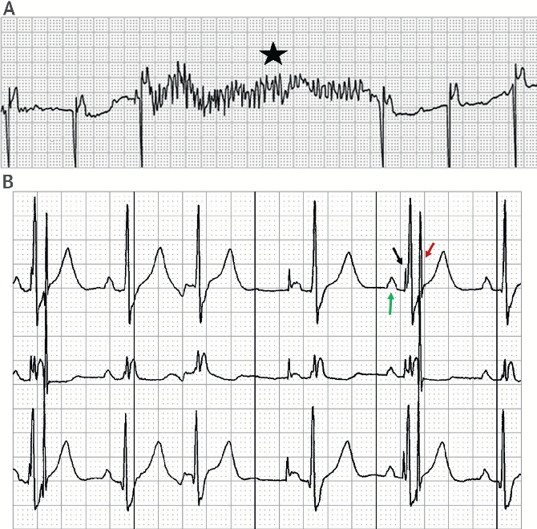
モードスイッチ（Mode Switching）
DDD設定中に心房性頻拍が発生すると、心房イベントが心室でトラッキングされ、上限レート（URL）まで心室ペーシングが加速する。モードスイッチアルゴリズムは心房頻拍を検出し、非トラッキングモード（VVI・DVI・DDI±レート応答）へ自動切替する。心房不整脈終了後は再びトラッキングモードに復帰する。
Figure 6：遠視野R波オーバーセンシング（不適切AF検出の原因）
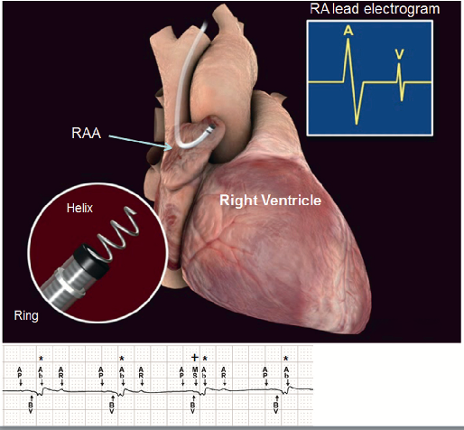
右室ペーシング回避（RV Pacing Avoidance）
孤立した右室ペーシングは、心室中隔を左室外側壁より先に活動化させ（左脚ブロックパターン）、左室収縮の不同期を引き起こす。これは左室機能低下や心不全・死亡などの有害な臨床転帰と関連する。
右室ペーシング誘発性心筋症の発生率
リスク予測因子：右室ペーシング割合
その他の予測因子
右室ペーシング回避アルゴリズムの基本概念は、必要時に心房ペーシングを届けつつ、固有伝導を促進するためにAV間隔をできる限り延長し、心室ペーシングを排除することである。代表的な実装：AAIR設定でAV伝導失敗時のみDDDへ自動切替、または固有伝導がなければAV間隔を超生理的値まで延長。
SECTION 3 レート応答（Rate-Adaptive Pacing）
レート応答の概要
レート応答（レート適応型ペーシング）は、身体的・精神的・感情的な運動に応じてペーシングレートを増加させる機能であり、変時不全（chronotropic incompetence）のある患者の運動耐容能を改善する。変時不全の定義：最大運動時に年齢予測最大心拍数の70%または100 bpmに到達できない状態。
| センサー | 特徴 | 注意点 |
|---|---|---|
| 加速度計 （最多） |
身体運動を速やかに検出。最も広く使用される | 上肢の動きが必要（トレッドミルで腕振りが少ないとレート反応不良）。中等度運動後のレート急減速あり |
| 換気量センサー | リード先端からジェネレーターに微弱電流を流し、呼吸による肺インピーダンス変化を測定。より生理的 | 肺疾患による頻呼吸では不適切なレート増加。ECGモニターが体内に微弱電流を注入する場合にセンサーエラーが生じることがある |
| 血液温度・心収縮能 | より生理的だが遅延が大きい | 加速度計と組み合わせたブレンドレスポンスとして使用されることが多い |
SUMMARY第2章のキーメッセージ
SECTION 1 可逆性を確認すること：徐脈の治療可能な原因
ペースメーカー植込みの前に除外すべき可逆的原因
徐脈性不整脈が可逆的かどうかの評価が最重要である。可逆的な場合は一時的ペースメーカーが優先される。以下の原因は治療によって回復することが多い。
ICU可逆的徐脈：原因別の対応プロトコル
ICUで徐脈に遭遇した際、以下の表で原因を系統的に検索する。回復可能性が見込まれる場合は、永続デバイス植込みを延期し、必要なら一時的ペーシングで橋渡しする。
| 原因 | 診断ポイント | 初動・解除 | 回復見込み |
|---|---|---|---|
| 下壁心筋虚血 | ECGでII/III/aVF ST上昇、トロポニン上昇。AVN動脈（90%は右冠動脈枝）の虚血で迷走神経反射＋AVNブロック。 | 緊急冠動脈再灌流（PCI）。徐脈そのものはアトロピン±一時的経皮ペーシング。 | 多くは48〜72時間で回復。1週間後も持続なら永続PM検討。 |
| ライム心炎 | ライム流行地域曝露歴、erythema migrans既往、II/III度AVB。Lyme血清抗体（IgG/IgM）。 | セフトリアキソン2g IV q24h × 2-4週、または経口ドキシサイクリン。一時的ペーシング併用。 | 1〜2週間で完全回復が一般的。永続PMはほぼ不要。 |
| 薬物性徐脈 | βブロッカー・Ca拮抗薬（特にverapamil/diltiazem）・アミオダロン・ジゴキシン・イバブラジン・クロニジンの服用歴。 | 原因薬剤中止。重症ではグルカゴン（βB過量）、Ca・インスリン高用量療法（CCB過量）、ジゴキシン抗体。アトロピン無効が多い。 | 薬剤半減期で回復。アミオダロンは半減期長く（数週〜数ヶ月）、永続PM要する場合あり。 |
| 高K血症 | K>6 mEq/L、ECGで peaked T波・QRS幅広・PR延長・洞停止・AVB。 | カルシウム製剤IV（膜安定化）→ インスリン+グルコース・β2作動薬・透析。 | K正常化で即座に回復。 |
| 甲状腺機能低下症 | TSH↑↑、FT4↓、徐脈＋低体温・浮腫・粘液水腫昏睡。 | レボチロキシン IV（粘液水腫昏視昏睡なら200-400 µg loading）+ ヒドロコルチゾン。 | 数日〜数週間で改善。慢性甲状腺機能低下のSNDは持続することあり。 |
| 低体温症 | 中心体温<35°C、ECGでJ波（Osborn波）、徐脈＋AVB。 | 体外復温（受動 or 能動）。32°C以下では除細動効果も低下。 | 復温で完全回復。 |
| 閉塞性睡眠時無呼吸（OSA） | 夜間の無呼吸時に洞停止・AVBが出現。日中は正常。 | CPAP導入。BMI管理。 | CPAPで完全消失することが多い。 |
| 高迷走神経緊張 | 若年運動選手・血管迷走神経反射（疼痛・吐気・排尿時など）。睡眠中の徐脈。 | 誘因回避。重度ならミドドリンや起立失神プログラム。 | 誘因除去で消失。永続PMはほぼ不要。 |
| 感染症（ICUで遭遇） | シャーガス病（中南米）・レジオネラ・オウム病・Q熱・腸チフス・発疹チフス・心内膜炎弁周囲膿瘍によるAV結節障害。 | 標的抗菌薬。心内膜炎弁周囲膿瘍は外科手術 + 一時的ペーシング。 | 原疾患治療で改善。シャーガス病は晩期にPM要することあり。 |
| 頭蓋内圧亢進 | Cushing反射（HTN+徐脈+不規則呼吸）、ICU脳卒中・外傷後。 | 頭蓋内圧管理（高浸透圧療法・脳室ドレナージ・頭部挙上）。 | ICP正常化で改善。 |
| 術後（特に弁形成・TAVI） | 大動脈弁置換・TAVR後のAVB（His束周辺障害）。心臓手術直後。 | 心臓外科一時的ペーシング（epicardial wires）で観察。 | 50%以上が1週間以内に回復。持続なら永続PM。 |
SECTION 2 洞不全症候群（SND）の適応
Table 1：SND に対する永続的ペースメーカー植込みの推奨（ACC/AHA）
| クラス | 推奨内容 |
|---|---|
| Class I適応あり |
|
| Class IIa適応あり得る |
|
| Class IIb考慮可 |
|
| Class III非適応 |
|
SECTION 3 後天性AV伝導障害・その他の適応
Table 2：AV伝導障害に対する永続的ペースメーカー植込みの推奨
| クラス | 推奨内容 |
|---|---|
| Class I |
第3度または高度第2度AVブロック（次のいずれかを満たす）：
|
| Class IIa |
|
| Class IIb |
|
| Class III |
|
神経心原性失神・神経筋疾患・心不全
SUMMARY第3章のキーメッセージ
SECTION 1 合併症の頻度と概要
Table 3：ペースメーカー関連合併症の頻度
合併症率は現在の植込みツール・手技で<1〜6%。即時/手技関連・中期・晩期の3つに大別される。迅速な認識が適時の管理を可能にする。
SECTION 2 即時・手技関連合併症
Figure 7：植込み即時合併症の実例
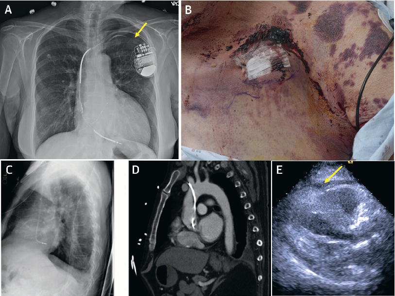
Figure 8：リード安定性の植込み時予測因子
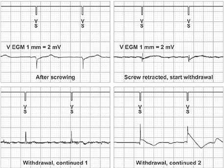
経静脈リード留置には前胸部の静脈穿刺が必要であり、肺尖が血管標的に近接するため、気胸（0.9〜1.2%）および血胸が1%以下で生じる。
気胸・血胸の予防策：解剖学的ランドマーク法を、頭静脈カットダウン・造影静脈造影・超音波ガイドによる血管視覚化に置き換えることでリスク低減。
ポケット血腫（手術を要する：3.5%）：抗凝固薬＋抗血小板薬の併用でリスク増加。ワルファリン継続（中断しない）はヘパリンブリッジングに比べて血腫形成率が低い（参考文献19）。NOACは可能であれば術前2〜3日中断する。
心穿孔（心嚢液貯留・心タンポナーデ：<1%）：リード再位置決めの適応：難治性心膜炎・持続性心嚢液・許容できないペーシング/センシング機能。能動固定リードは受動固定より穿孔リスクが高いが、位置選択の容易さと将来の抜去のしやすさから広く使われる。植込み時のEGMで陰性傷害電流（Figure 8B）は穿孔を示唆。
PM植込み術前後の抗凝固管理（BRUISE-CONTROL試験ベース）
血腫はPM合併症の中でも頻度が高く（3.5%）、感染リスクも上昇させる。抗凝固薬の周術期管理は出血と血栓のバランスが重要。BRUISE-CONTROL試験以降は「ワルファリン継続群が、ヘパリンブリッジ群より血腫リスクが約4分の1」と確立した。
| 薬剤 | 推奨方針 | 具体的タイミング |
|---|---|---|
| ワルファリン | 継続が推奨（INR < 3.0で実施）。ヘパリンブリッジは血腫リスク約4倍に増加（BRUISE-CONTROL）。 | 術前INRチェック。中断は不要。 |
| DOAC（NOAC） | 可能なら術前2〜3日中断（最終投与後36-48時間以上のtrough）。心原性塞栓症リスクが高ければ短縮も。BRUISE-CONTROL II試験では「中断 vs 継続」で血腫差がない結果。 | ダビガトラン：腎機能良好なら24-48h前、不良なら48-96h前。リバーロキサバン/アピキサバン：24-48h前。エドキサバン：24h前。 |
| 抗血小板薬（単剤） | アスピリン継続可。クロピドグレル単剤も継続可（症例ごと評価）。 | 休薬不要。 |
| DAPT（2剤併用） | 血腫リスク最高。可能なら片方を一時中止。最近のステントなど中止できない場合は厳重なポケット管理。 | 急性期PCI後の必要性により判断。循環器との協議必須。 |
| ヘパリン | 術中・術後使用は血腫リスク上昇。可能なら術後24h以上避ける。 | 機械弁・最近の塞栓既往でやむを得ない場合のみ。 |
SECTION 3 中期・晩期合併症
Figure 9：Twiddler症候群（高インピーダンスによるcapture不全）
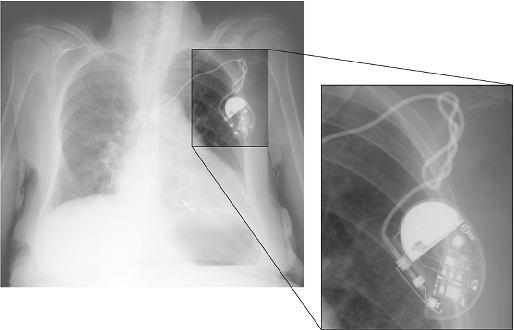
Figure 10：中期合併症の実例
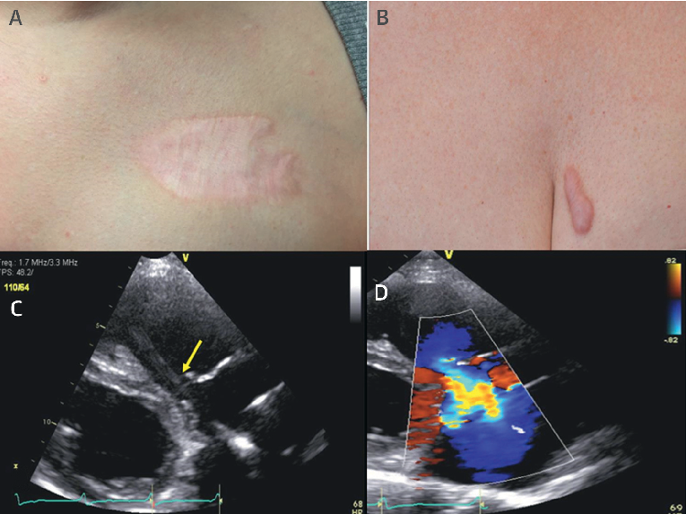
三尖弁・静脈合併症と瘢痕
Figure 11：リード機能不全の電気的診断
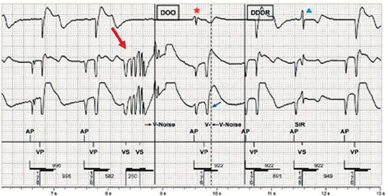
Figure 12：晩期合併症
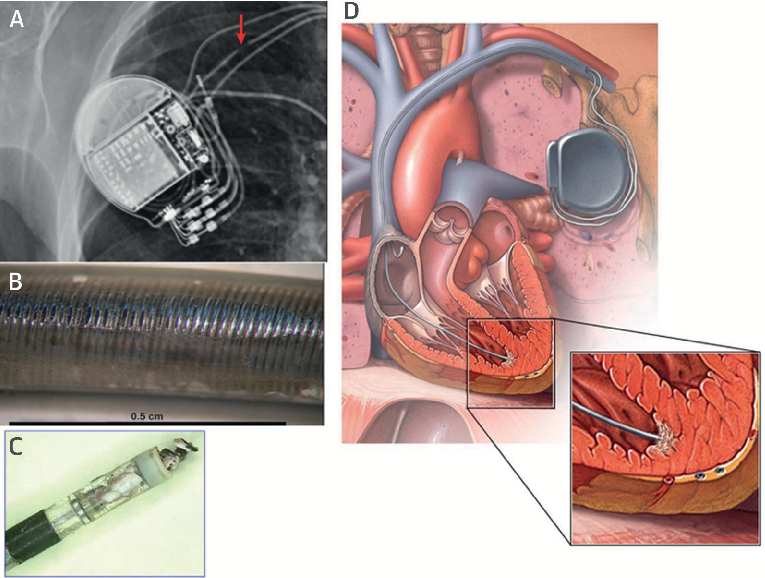
晩期リード合併症のまとめ
| 合併症 | インピーダンス | 特徴的所見 | 対応 |
|---|---|---|---|
| コンダクター断線 | ↑高インピーダンス | 非生理的ノイズ（高周波・飽和EGM、短い非生理的間隔）、急激なインピーダンス上昇。X線では多くが見えない | リード交換/追加 |
| 絶縁破損 | ↓低インピーダンス | 周囲筋肉（筋電位）のオーバーセンシング、露出導体による信号混入 | リード交換/追加 |
| Exit block（線維化・結晶） | 徐々に↑ | 数ヶ月かけて閾値・インピーダンスが緩やかに上昇。断線とは区別が重要 | 機能的なら経過観察。ステロイド溶出リードで現代はほぼ消失 |
| Twiddler症候群 | ↑高インピーダンス | 患者が皮下でデバイスを回転させ、リードにループ・張力 → 断線。X線で確認 | リード交換、患者教育 |
SECTION 4 CIED感染の管理
Figure 13：ポケット感染の所見
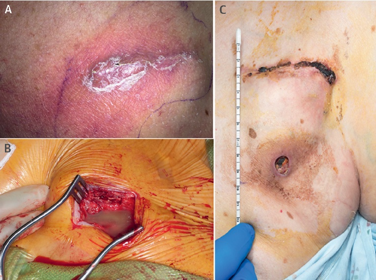
CIED感染のリスク因子と臨床像
CIED感染は主に植込み後数週間以内に発症するが、術後1年まで発症することがある。初期再手術が最大のリスク因子である。ポケットへの再穿刺（針吸引・手術）は、腫脹が非常に緊張し痛みを伴う場合を除き回避する。
| リスク因子 | 臨床像 |
|---|---|
| 糖尿病、心不全、腎不全 | ポケット感染：発赤・膿・びらん・慢性ポケット疼痛・非治癒切開。発熱・悪寒・菌血症・心内膜炎（リードまたは弁）：リード/弁の疣贅あり |
| 副腎皮質ステロイド使用 | |
| 術後血腫、抗菌薬予防投与なし | |
| 経口抗凝固薬、以前のCIED感染 | |
| ジェネレーター交換、一時的ペースメーカー使用 |
Figure 14：CIED感染管理アルゴリズム
抗菌薬期間は画像（TEE）・培養・微生物学・臨床像によって決定される。専門施設への紹介・完全なデバイス抜去・標的抗菌薬療法の組み合わせが良好な転帰と関連する（参考文献32）。
初期評価：TEE・ポケット所見・血液培養
ポケット感染（血培陰性）
抗菌薬 7〜10日間
リードびらん（血培陰性）
抗菌薬 10〜14日間
血培陽性でTEE陰性
非SA菌：2週間
黄色ブドウ球菌（SA）：2〜4週間
弁またはリード心内膜炎
AHA心内膜炎ガイドライン
（4〜6週間が基本）
SUMMARY第4章のキーメッセージ
SECTION 1 バッテリー・リード診断
バッテリー状態とリード診断の基礎
リード故障の鑑別と診断フロー
リード関連の問題は、インピーダンス変化のパターン、EGM所見、X線像、臨床経過から鑑別する。「急激 vs 緩徐」「高インピーダンス vs 低インピーダンス」の2軸で大半が分類できる。
| 所見 | コンダクター断線 | 絶縁破損 | Exit block（線維化） | 結晶沈着 |
|---|---|---|---|---|
| インピーダンス変化 | 急上昇 >3,000 Ω | 急低下 <200 Ω | 緩徐に上昇（数ヶ月） | 緩徐に上昇 |
| 閾値変化 | 不安定・無限大化 | 安定または上昇 | 徐々に上昇 | 徐々に上昇 |
| EGM所見 | 非生理的高周波ノイズ・飽和波形・短い非生理的間隔 | 筋電位過感知・遠視野信号混入 | 正常（信号は得られる） | 正常 |
| X線所見 | 多くは見えない（フィラー微小断絶）。明らかなら矢印で指摘可 | 視覚的検出は困難 | 変化なし | 変化なし |
| 主要原因 | Twiddler症候群、鎖骨下「クラッシュ」、急峻な静脈進入角、若年者 | 同様の機械的応力、シリコーン絶縁、近接する複数リードの摩擦 | 線維化進行、ステロイド未含有リード（旧式） | カルシウムハイドロキシアパタイト沈着 |
| 臨床的緊急度 | 高（リード機能不全 → ペーシング失敗） | 高 | 中（機能維持下では経過観察可） | 低 |
| 対応 | リード交換 or 並行リード追加。古いリードは抜去 or 残置の判断（TLE専門施設） | リード交換。露出導体は感染温床にもなる | 機能保たれていれば経過観察。出力増強で対応 | 経過観察 |
リード抜去（Transvenous Lead Extraction; TLE）の適応
不要になった/問題のあるリードを抜去する手技。長期植込みリードは血管壁・心筋に癒着しているため、機械的・レーザー・電気外科的な専用ツール（locking stylets、laser sheaths、rotational sheaths）を使う。専門施設・外科バックアップ下で実施。
| クラス | 適応 |
|---|---|
| Class I | CIED感染（ポケット感染・全身感染・心内膜炎）／重篤なリード関連血栓塞栓症／生命を脅かす不整脈の原因となるリード／同一血管系で複数リードによる三尖弁機能不全 |
| Class IIa | 慢性疼痛が他の治療に反応しない場合／必要なMRIが代替不能でリードが障害になる場合／使用しないリードの放置が血管アクセスを阻害する場合 |
| Class III | 無症状で機能保持されている放棄リード／単発の挿入失敗／患者の嗜好による「予防的」抜去（リスクが利益を上回る） |
SECTION 2 ペースメーカー誘発性頻拍（PMT）と上限レート動作
Figure 15：PMTと上限レート動作（4パネル）
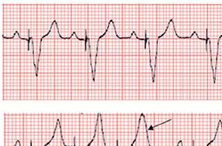
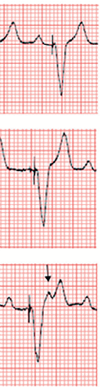
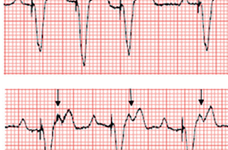
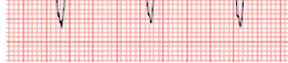
PMTの機序と対処
PMTは、心室イベント（PVCや心室ペーシング）が逆行性に心房に伝導し（VA伝導）、PVARP外でP波が感知されることで「心室ペーシング→逆行性P波→心室ペーシング」の循環ループが形成される頻拍である。心室ペーシングが上限トラッキングレートで持続する。AV解離による血行動態障害と頸部拍動感（cannon A波による）・動悸を来す。
磁石適用（最も迅速）：非同期ペーシングモードとなり、逆行性P波のトラッキングが防止されてループが断ち切られる。
PMTアルゴリズム：上限トラッキングレートでの心室ペーシングを認識し、（a）PVARPを1サイクル延長して機能的心房アンダーセンシングを誘発、または（b）1サイクル心房ペーシングを心室ペーシングと同時実施して心房を逆行性インパルスに対して不応期にする。
上限レート動作の理解（DDD）
DDD設定での上限レートはTARP（=AV間隔＋PVARP）によって決定される。洞レートが上昇すると：
| 洞レート | 動作 | 臨床的意義 |
|---|---|---|
| ≤上限トラッキングレート | 1:1トラッキング | 正常 |
| 上限レート〜TARP相当 | 進行性PR延長 → Wenckebach様ブロック | 徐々にPVARPに落ちるP波が増加。心室ペーシングレートが段階的に低下 |
| ≥TARPに相当する洞レート | 2:1ブロック（急激な心室レート半減） | 患者が症状を訴えることがある。2:1ブロックレートまでのWenckebach間隔を確保するよう間隔設定の最適化が必要 |
SUMMARY第5章のキーメッセージ
SECTION 1 術前ペースメーカー管理（電気メス・電磁干渉）
Figure 16：電流経路とペースメーカー干渉リスク
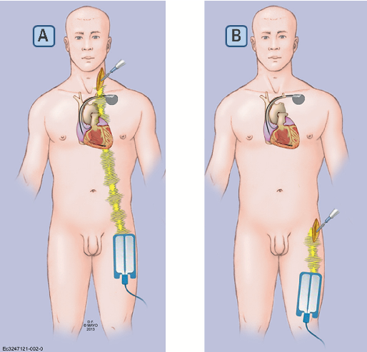
電気メス（電気手術）の基礎とEMIのメカニズム
電気手術（電気メス）は100 kHz〜4 MHzの電流で組織の切開・凝固を行う。双極電気メスは両電極がペン先に集中し電流経路が局所にとどまる。単極電気メスは分散パッドとの間で体内を電流が流れ、ペースメーカーリード電極がEMIを感知する可能性がある。
心室チャンネルでEMIが感知されると、固有心活動と誤解釈されてペーシングが抑制され、ペースメーカー依存患者では徐脈・心停止を来す。心房リードでのEMI感知は上限レートまでの高速心室ペーシングや不適切モードスイッチを引き起こす可能性がある。
Figure 17：術前ペースメーカー管理アルゴリズム
手術部位を確認：臍より上か下か？
臍より下（腹部以下・下肢）
分散パッドを下肢に配置。術前プログラム変更は不要。（著者らの経験では下肢・股関節手術でのEMIは皆無）
臍より上（胸部・頭頸部・上肢・腹部）
PM依存患者：非同期モード（VOO/AOO/DOO）へ再プログラムまたは磁石を使用。非依存患者でも腹部以上の単極電気メス使用が予想される場合は対応する。
術後評価：デバイスを問診して適切な動作を確認し、もとの設定に戻す。
プロフェッショナル学会の電気手術ガイドライン（HRS/ASA）
- 可能であれば双極電気メスを使用する
- 単極電気メス使用時は<5秒の短時間照射とし、照射間に>5秒の間隔を空ける
- 分散パッドをペースメーカーとリードから電流経路が遠ざかるよう配置する（下肢に配置するのが理想）
SECTION 2 ペースメーカー患者の心臓MRI
心臓MRIの重要性と歴史的背景
CMRは普及し、ペースメーカー植込み患者の75%が植込み後に何らかのCMRスキャンを必要とすると推測される。1980年代には、ペースメーカー患者のCMR（多くは知らずに実施）で死亡事例を含む有害事象が発生し、各国の規制当局や学会ガイドラインはCMRを禁忌としていた。その後、メーカーはCMR条件付きペースメーカーを開発した。しかし大多数の植込み患者はレガシー（非CMR条件付き）デバイスを持っている。
Table 4：CMRによる潜在的有害事象
| 有害事象 | 機序 | 頻度・リスク因子 | 予防策 |
|---|---|---|---|
| デバイス・リードの 機械的移動 |
静的磁場によるデバイス・リードの強磁性素材への作用 | 現代のリードは強磁性材がほぼなく、移動は非常に稀。1.5T装置の捻転力は通常問題にならない。リスク：①磁場強度 ②強磁性材量 ③装置からの距離 ④植込みからの期間 | 新規植込みはリード安定化を待つ。CMR条件付きデバイスは強磁性材を最小化。3T CMRは経験不足のため回避。 |
| 電流誘導と リード先端加熱 |
RF・パルス磁場でリードに電流誘導→リード先端組織加熱 | SAR（比吸収率）が加熱リスクを規定。リード長さ・ループ形状が規定。心外膜・断線・放棄リードで加熱リスク↑。胸部CMRで高リスク。インピーダンス変化・感知低下・閾値上昇が報告されている（長期的変化は稀） | SAR最小化（画質確保の範囲内）。心外膜・断線・放棄リードでは実施を避ける。適切なランドマーク選択。CMR直後にリードパラメーター確認。 |
| EMIによる ペーシング抑制/ 加速 |
RFパルスが真の心臓信号として感知される | PM依存患者でのマグネットモードや停止は稀に報告 | 新型デバイスはEMIシールドが改善。PM依存患者は非同期モードへ再プログラム、非依存患者はデマンドモードへ。スキャン中は継続モニタリング。 |
| 不整脈誘発 | 強力なパルス磁場で心筋電気刺激 | 主に動物実験で示された。臨床的条件で生成される電流は心筋捕捉には不十分 | 心肺蘇生訓練を受けた医療者による継続的なリズムモニタリング。リードの長さ・ループ制限。 |
| リードスイッチ 動作変化 |
静的磁場がリードスイッチを作動させ、非同期ペーシング等が生じる | 報告頻度0〜38%（装置からの距離に依存） | CMR条件付きデバイスにはHallセンサーを採用（より予測可能な動作）。モニタリング中に認識したらスキャン中断。2002年以前のデバイスをPM依存患者に使用する場合は実施回避。 |
| パワーオンリセット | 静的・動的RFパルスの組み合わせでデバイス回路に電流が誘導される | 頻度0.7〜3.5%。2002年以前のデバイスでより頻繁。PM依存患者では危険（VVIモードへの復帰でEMI感知・ペーシング抑制） | 2002年以降のデバイスを使用。PM依存患者でのスキャンに特に注意。 |
RF=ラジオ周波数；SAR=比吸収率；EMI=電磁干渉
Figure 18：レガシー（非CMR条件付き）デバイスでのCMR実施アルゴリズム
放射線科医・循環器専門医・専門看護師・医学物理士からなる統合チームが確立したプログラムで管理することで、レガシーデバイス患者のほぼ全例でのCMRが安全に実施できる。Mayoクリニックでは1,000例以上のスキャン実績があり、非胸部スキャンの98%以上で臨床的疑問が解決された。
CMR条件付きデバイスか確認。→ Yes: 条件に従い実施可能
以下の場合は実施回避：一時的PM / 皮下ICD / 回収・勧告対象CIEDでERI到達 / PM依存患者で2002年以前のデバイス / 心外膜・断線・放棄リードがある場合
専門施設プロトコル：①HRS専門看護師による事前・事後評価 ②放射線科医・医学物理士評価 ③放射線科によるインフォームドコンセント ④放棄リードがある場合はトロポニン測定 ⑤スキャン中継続モニタリング（ACLS訓練を受けた者が実施）
CMR条件付きデバイスの要件
主要なデバイスメーカーはすべてCMR条件付きリードとペースメーカー、CRTデバイス、ICDを開発している。CMR条件付きとは「特定のMR条件下で既知のハザードがない」ことを意味する（「CMR安全」=「いかなる条件下でもハザードがない」とは異なり、現在CMR安全なデバイスは存在しない）。
パワーオンリセットは、静的・動的RFパルスの組み合わせによってデバイス回路に電流が誘導され、デバイスがデフォルト出荷設定に戻る現象である（頻度0.7〜3.5%、2002年以前のデバイスで多い）。一部のデバイスではVVIモードに戻ることがあり、PM依存患者でEMIをセンシングすると同期モードでペーシング出力が抑制される危険がある。特定のメーカーの旧型デバイスで報告されており、2002年以前のデバイスをPM依存患者に使用する場合はCMR実施を避けることが推奨されている。
SUMMARY第6章のキーメッセージ
SECTION 1 ICU入室時PM患者の評価フロー
入室30分以内に確認する5項目
ペースメーカー植込み患者がICUに入室した際、以下5項目を最初の30分以内に確認する。電気メス手術・CMR・心肺蘇生など、その後の全ての管理判断の基礎となる。
機種・メーカーの特定：携帯カードまたは本人/家族から確認。不明時はCXRでデバイス本体のレントゲン不透過マーカーを読影し、メーカー情報源（Cardiac Rhythm Device ID database 等）で照合する。機種が分かれば磁石応答・CMR条件・専用プログラマーの特定が可能になる。
植込み日・経過年数：新鮮植込み（<6週）はリード未安定のため、CMR実施・激しい上肢運動・大胸筋ストレッチを延期する。経過10年以上ならERI接近の可能性が高く、デバイスチェックを優先。電池消耗の早い患者（高ペーシング閾値、高%ペーシング）はさらに早期に到達する。
ペースメーカー依存度の判定：過去のチェック報告書の「intrinsic rhythm下のレート」を参照。記録がなければ磁石応用または下限レートを徐々に下げて自己心拍を観察する（ICUでは循環器相談下で慎重に）。依存度判定は電気メス手術・経皮的処置・デバイス交換の前提。依存患者では非同期モードへの再プログラムが必須となる。
12誘導ECGでペーシングモード判別：下表参照。スパイクの位置（P波前/QRS前/両方）と数、QRS形態（LBBB様 vs RBBB様）から推定する。
最終デバイスチェック報告書の確認：閾値（A/V）、感度（A/V）、リードインピーダンス（A/V）、電池残量、%ペーシング（A/V）、モードスイッチ回数、治療歴。特に%RV pacing > 40% は右室ペーシング誘発性心筋症のリスク評価対象。
12誘導ECG所見からのモード推定
| ECG所見 | 推定モード | 解釈と次のアクション |
|---|---|---|
| P波前のスパイクのみ QRSは正常幅 |
AAI / AAIR | 洞不全症候群でAV伝導が保たれている。AV伝導悪化時にDDDへ自動切替する設定が一般的。 |
| QRS前のスパイクのみ QRSはLBBB様で広い P波と独立 or なし |
VVI / VVIR | 慢性AF、または洞調律＋AVブロックでDDDが選択されなかった場合。AVシンクロニーがないため心拍出量低下リスクあり。 |
| P波前・QRS前 両方のスパイク 規則的AV間隔 |
DDD（AV逐次ペーシング） | 洞徐脈＋AVブロック、両方が機能不全。最も高頻度。 |
| 固有P → AV間隔 → QRS前スパイク | DDD（P-同期VP） | 洞機能正常＋AVブロックのみ。患者の自然な心拍数に追従して心室をペースする最も生理的なモード。 |
| QRS前のスパイクが2つ QRSは左軸偏位 or 正常軸 |
BiV pacing（CRT） | 右室＋左室（冠静脈洞）リードからの同時ペーシング。心不全＋広QRS患者でCRT適応。 |
| RBBB様のペースQRS | 左室誤留置の可能性 | RV lead が PFO/middle cardiac vein 経由で LV に入った可能性。CXR側面像 + 経胸壁エコーで確認。血栓塞栓リスクのためICU精査必須。 |
SECTION 2 ペースメーカー異常 5大トラブルの鑑別と初動
ECG所見から逆引きする鑑別表
ICUでペースメーカー異常を疑うECG所見を5つに分類し、機序別に対応する。鑑別の鍵は「スパイクの有無」「スパイク後の捕捉の有無」「自己心拍との関係」である。
| トラブル分類 | ECG所見 | 主な機序 | 初動対応 |
|---|---|---|---|
| ① 出力なし (No output) |
本来出るべきタイミングでペーシングスパイクなし。徐脈＋自己心拍のみ。 | オーバーセンシング（筋電位・T波・遠視野QRS）/ リード断線 / 電池消耗 (EOL) / コネクター緩み | 磁石応用→非同期ペーシングが出現すれば「センシング過剰」確定。出ない場合はリード/電池故障。緊急デバイスチェック＋経皮ペーシング準備。 |
| ② 捕捉失敗 (Failure to capture) |
スパイクは出るが直後にQRS/P波が出ない。 | 閾値上昇（exit block・線維化・梗塞）/ リード変位（dislodgement）/ リード断線 / 高K血症 / 抗不整脈薬 | K値・薬剤確認、CXRでリード位置確認、デバイスチェックで閾値測定。経皮ペーシング準備。リード変位なら再固定手術。 |
| ③ アンダーセンシング (Undersensing) |
固有P/QRSがあるにもかかわらず不適切なタイミングでスパイクが出現（競合）。 | 感度設定が低い / 信号振幅低下（梗塞・線維化）/ リード絶縁破損 / 電位変化（運動・体位） | 感度値を下げる（より敏感に）＝設定値を小さく（例：1.0→0.5 mV）。EGM振幅評価。リード問題なら交換検討。 |
| ④ オーバーセンシング (Oversensing) |
固有心活動でないノイズ（筋電位・T波・遠視野R波・EMI）を心拍として感知 → ペーシング抑制 or 不適切モードスイッチ。 | 筋電位（単極リード使用時に多い）/ T波 / 遠視野R波（心房リード）/ リード断線（高周波ノイズ）/ EMI（電気メス・MRI・電気毛布） | 感度値を上げる（鈍く）＝設定値を大きく。双極設定への変更。リード断線疑いはX線・EGM確認。EMI源除去。 |
| ⑤ 不適切な高速ペーシング | 頻脈（しばしば上限トラッキングレートまで）。患者は動悸・低血圧。 | PMT（逆行性VA伝導）/ 心房頻拍をトラッキング / 加速度計の誤検出（震え・搬送中振動）/ 換気量センサーの誤作動（人工呼吸器・ECGモニター電流） | 磁石応用→非同期になり頻拍停止すれば「トラッキング」確定。心房頻拍はモードスイッチ・抗不整脈薬・抗凝固。PMTはアルゴリズム作動 or PVARP延長。 |
SECTION 3 磁石応用の臨床（メーカー別動作）
磁石応答の原則
磁石をデバイス缶の真上（電極からは離れた位置）に置くと、内部のreed switch（または最近のHallセンサー）が静磁場を感知し、デバイスは多くの場合センシングを無効化した固定レートの非同期ペーシング（VOO/AOO/DOO）に切り替わる。これによりEMI・PMT・筋電位過感知でのペーシング抑制が即座に解除できる。磁石を外すとデバイスはプログラムされた設定に戻る。
主要メーカー別の磁石応答（ペースメーカー）
| メーカー | 電池満時のレート | ERI（要交換）時 | 備考 |
|---|---|---|---|
| Medtronic | 85 bpm | 65 bpm | 3拍だけ100 bpmで開始（threshold margin test）するモデルあり。 |
| Boston Scientific | 100 bpm | 85 bpm | 磁石応答プログラムがOFF設定の場合は応答なし → 事前確認重要。 |
| Abbott (St. Jude) | 98–100 bpm | 86.3 bpm（年代で異なる） | 古い機種ではEPテスト用に「battery test」モード（98.6 bpm）に入る。 |
| Biotronik | 90 bpm | 80 bpm | 10拍ごとに段階的に減速する仕様あり。 |
※ICDの場合は磁石で「治療抑制」（衝撃療法を一時停止）になり、ペーシング機能には影響しない（重要：ICDとPMで磁石応答は全く異なる）。
SECTION 4 PMが動作しない時の緊急対応
PM不全による徐脈・心停止：3つの治療層
PM依存患者でデバイス不全（出力なし・捕捉失敗）が発生し血行動態が破綻した場合は、以下の3層で並行して対応する。デバイスチェック・修正は同時に進めるが、まず患者を救命する。
第一層：薬物療法（即時開始）。アトロピン 0.5 mg IV 3〜5分ごと（最大3 mg）。AVブロック原因なら効果限定的。エピネフリン 2〜10 μg/min持続点滴、またはイソプロテレノール 2〜10 μg/min。ドーパミン 5〜20 μg/kg/min。
第二層：経皮ペーシング（数分以内）。多機能除細動器のペーシング機能を使用。前後配置（前胸部 + 背部、デバイスを避ける）が推奨。出力80〜100 mAから開始し捕捉確認まで20 mAずつ増加。レート60〜70 bpm。鎮痛・鎮静必須（ベンゾジアゼピン or 短時間オピオイド）。捕捉確認は触知脈拍 + EGMで（ECGアーティファクトに惑わされない）。
第三層：経静脈一時ペーシング（30〜60分以内）。右内頸静脈または右大腿静脈経由でballoon-tipped pacing catheterを右室に進める。ペーシング閾値1〜5 mA、感度2〜5 mVから開始。長期使用の場合は循環器コンサルトで永続デバイスへの早期移行 or 既存デバイスのリビジョン。
SECTION 5 タイミング図の読み方（実例計算）
DDDタイミング図：実症例での計算
プログラム値を読んで上限レート動作を予測する力は、ICUでDDD患者の頻脈・徐脈を診た瞬間に役立つ。Figure 15B〜Eの設定例で計算手順を示す。
| 下限レート（LR） | 60 bpm（=1,000 ms） |
| 上限トラッキングレート（URL） | 130 bpm（=462 ms） |
| AV間隔 | 150 ms |
| PVARP | 250 ms |
| TARP（Total Atrial Refractory Period） | AV + PVARP = 150 + 250 = 400 ms |
| 2:1ブロック開始レート | 60,000 ÷ 400 = 150 bpm |
| Wenckebach帯（URL〜2:1） | 130 〜 150 bpm（20 bpm幅） |
PMT診断のECG基準
| 所見 | 解釈 |
|---|---|
| 規則的な広QRS頻拍 | 心室ペーシング由来。LBBB様QRS。 |
| レートが上限トラッキングレートに正確に一致 | 例：URL 130 bpmなら正確に130 bpm。±2 bpm以内。 |
| 各QRSにペーシングスパイク | 100% V-paced。 |
| QRS直後に逆行性P波 | 下壁誘導（II、III、aVF）で陰性、aVRで陽性。VA伝導の証拠。 |
| 磁石適用で頻拍停止 | 非同期モードに切り替わり、逆行性P波のトラッキングが断たれてループ消失。診断・治療を兼ねた最強ツール。 |
SECTION 6 ICU特異的なペースメーカー落とし穴
研修医が遭遇する典型的な誤対応7選
| シーン | 誤り | 正解 |
|---|---|---|
| ① ECGモニター由来の頻拍 | 「不適切な高速ペーシングだ、PMが故障した」と緊急デバイスチェックを依頼。 | 換気量センサー搭載機種ではECGモニターの微弱電流が呼吸由来と誤認識される（CLINICAL PEARL: Mulpuru et al. 言及）。ECGモニターの導出を切替 or 機種交換で消失するか試す。 |
| ② リハビリ中の心拍数急上昇 | 「ペースメーカーが暴走している」と中止指示。 | 加速度計はトレッドミル歩行で過剰反応することがあるが、リハ中の生理的レート上昇のことも多い。ECG所見でPmtの基準を確認。 |
| ③ 電気メス術後の急激なペーシング抑制 | 「PMが壊れた」と慌てる。 | EMIによる過感知でペーシング出力が抑制されている可能性。磁石を缶に置けば即座に非同期ペーシング再開。術後デバイスチェックで設定を再確認。 |
| ④ 鎖骨下静脈穿刺後の片側上肢腫脹 | 蜂窩織炎を疑い抗菌薬投与。 | 鎖骨下静脈血栓・狭窄の可能性。CTV/MRV/エコーで評価。多リード患者でリスク高。永続抗凝固検討。 |
| ⑤ 高齢PM患者の発熱＋ポケット発赤 | 「軽度の表在感染」と局所抗菌薬。 | CIED感染を疑う：血液培養2セット + 経食道エコーで弁/リード疣贅評価。AHAガイドラインで全症例「complete device removal」が推奨。経皮的針吸引は感染を悪化させるため禁忌。 |
| ⑥ 心房細動が新たに検出 | すぐ抗凝固開始。 | 「不適切モードスイッチ」（遠視野R波過感知）を必ず除外。EGM確認後に判断。本物のAFなら抗凝固＋抗不整脈/レート制御。 |
| ⑦ MRI予約時に「PMだから禁忌」 | CMRをキャンセル → 必要な診断ができない。 | CMR conditional デバイスは1.5 T安全。Legacy デバイスでも専門チーム下で実施可能（98%以上のスキャンで臨床疑問解決）。「禁忌」ではなく「条件付き可能」。 |
古いベッドサイドモニターではペーシングスパイクをR波として検出してしまい、実際は捕捉失敗（spike → QRSなし）でも心拍数を「ペーシングレート通り」と表示することがある。患者は実際には徐脈・無脈であっても、モニターは正常レートを示す。触知脈拍・動脈圧波形・SpO2波形でメカニカル拍動を必ず確認すること。現代モニターは「pacing artifact suppression」機能で改善されているが、設定や機種により挙動が異なる。CIED患者ICU入室時に必ずモニターのpacing認識を確認しておく。
VVI（心室のみ）ペーシング患者で、VA逆行性伝導があるとペーシングのたびに心房が閉じた房室弁に対して収縮し（cannon A波）、患者は「動悸・全身倦怠感・労作時息切れ・浮腫・血圧変動」を訴える。これがペースメーカー症候群（pacemaker syndrome）。原疾患のない患者で症状が新規発症した場合、AVシンクロニーを取り戻すためDDDへのアップグレード（心房リード追加）を検討する。SAVE PACe・MOST試験ではVVIペーシング患者の約20%にこの症候群が発生するとされる。
必ず「complete device removal（全リード抜去 + 缶摘出）」を実施した上で、以下の期間で抗菌薬投与：
- ポケット感染（血液培養陰性）：抜去後2週間
- リード露出（血液培養陰性）：抜去後7〜10日
- 菌血症（S. aureus以外）：抜去後2週間
- 菌血症（S. aureus）：抜去後2〜4週間
- リード心内膜炎：抜去後4〜6週間
- 弁膜症心内膜炎：4〜6週間（IE通常通り）
経験的初期治療：vancomycin（MRSAカバー）+ 必要に応じてグラム陰性カバー。培養結果で de-escalation。リード抜去はTLE（transvenous lead extraction）専門施設で実施。デバイス再植込みは血液培養陰性確認後（IE合併では2週間以上後）。
SUMMARY第7章のキーメッセージ
出典：Mulpuru SK, Madhavan M, McLeod CJ, Cha Y-M, Friedman PA. Cardiac Pacemakers: Function, Troubleshooting, and Management. Part 1 of a 2-Part Series. J Am Coll Cardiol. 2017;69(2):189–210.
DOI：https://doi.org/10.1016/j.jacc.2016.10.061
本資料は教育目的で作成したサマリーです。診断・治療方針の決定には必ず原典ガイドラインを参照してください。
制作：ICU 関谷